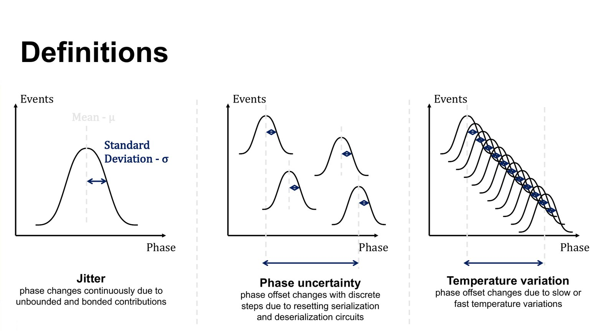
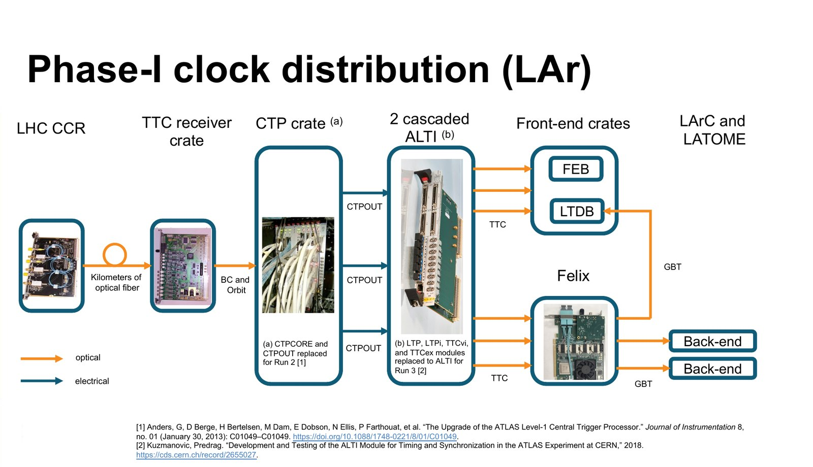
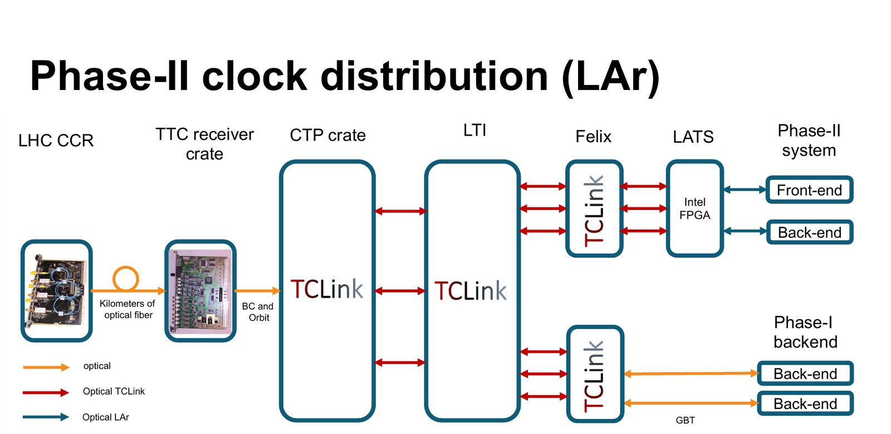
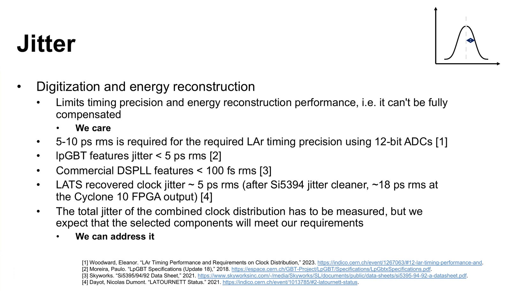
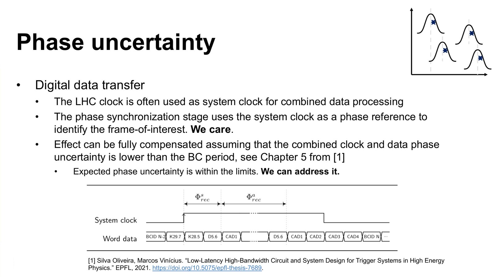
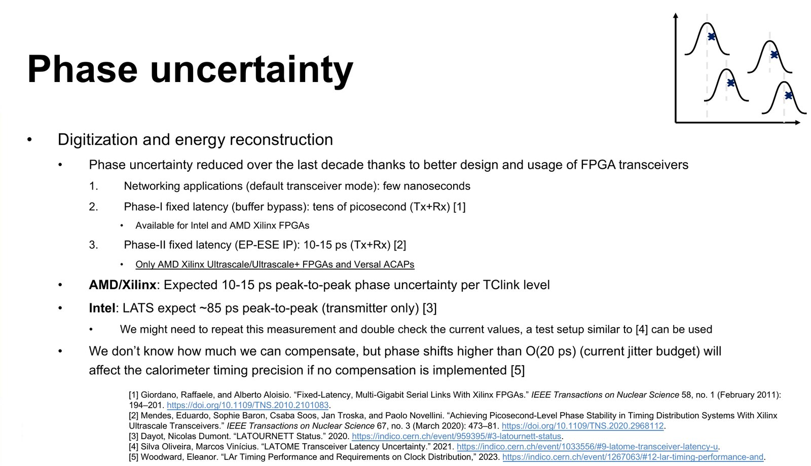
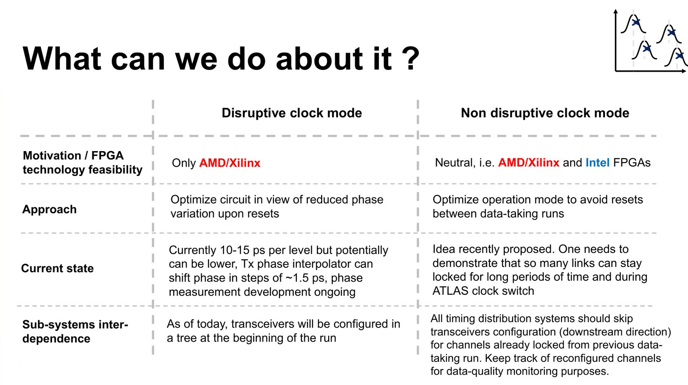
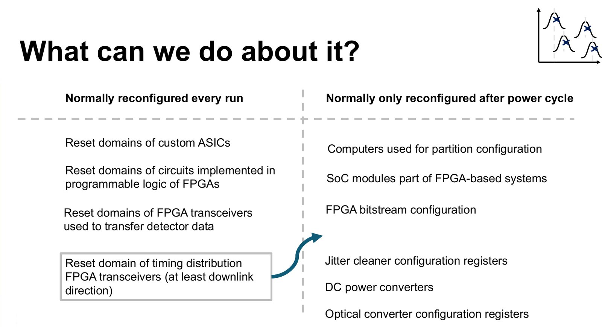
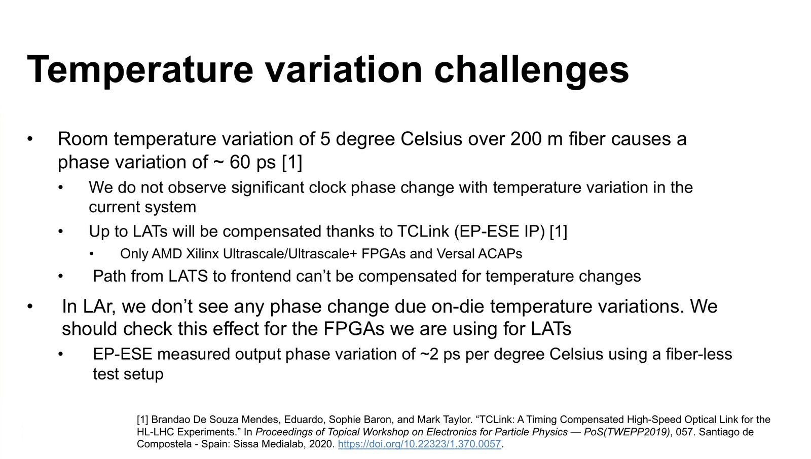
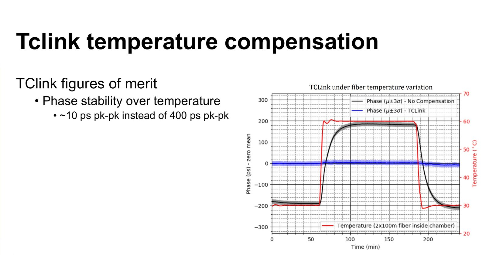

Everything in a collider experiment runs on one clock: the LHC bunch clock at about 40 MHz, distributed from the accelerator to every board of the experiment over kilometres of fibre. When the clock arrives a little early or a little late, or a little differently after every reset, the effect ranges from nothing at all to a degraded energy measurement. In May 2023 I presented, for the ATLAS Liquid Argon calorimeter group, an analysis of what that means for the upgrade of the experiment for the High-Luminosity LHC. This post follows that talk.
Three ways for a clock to be wrong
It helps to separate three effects, because they have different causes and different cures.
Jitter is the continuous, random wobble of the clock edges around their average position. Measured over many cycles, it gives a distribution with a standard deviation, usually quoted in picoseconds rms.
Phase uncertainty is a jump. The average phase of the clock is stable, but after a reset of the serialisers and deserialisers along the path, it settles at a different value, in discrete steps. Each reset can give a different offset.
Temperature variation is a slow drift. Fibres and electronics change their delay with temperature, so the phase follows the temperature of the rooms and cables it passes through.

The clock today, and tomorrow
In the current system, the clock comes from the LHC control room, is received in a crate of timing modules, passes through the Central Trigger Processor and the ALTI modules that replaced older timing hardware for Run 3, and reaches the front-end and back-end crates of the calorimeter over optical links. For the analogue readout and trigger there are no FPGA transceivers in the chain, so phase uncertainty is neither measured nor noticed. The jitter of the recovered clock is similar to what it was in Runs 1 and 2, and within the budget of the front-end.

For the High-Luminosity LHC the chain changes. New timing modules (LTI) feed the readout system (FELIX) and new LAr timing boards (LATS), and the links that carry the clock are FPGA transceivers everywhere. Part of the chain uses TCLink, an IP core developed at CERN that measures and compensates the phase of the clock in real time.

For each of the three effects the talk asked two questions: do we care, and what can we do about it.
Jitter
Jitter matters for the transceivers themselves: the faster the links, the cleaner the reference clock they need. Commercial jitter cleaners now meet those requirements with margin.
For the calorimeter it matters more fundamentally. The clock that samples the analogue pulse in the ADC sets the time at which the pulse is measured, and jitter there limits the timing precision and the energy reconstruction. It cannot be compensated later. With 12-bit ADCs, the calorimeter needs 5 to 10 ps rms. The components are good enough: the radiation-tolerant lpGBT link chip has less than 5 ps rms, commercial phase-locked loops less than 100 fs rms, and the LATS recovered clock about 5 ps rms after its jitter cleaner. The total jitter of the chain still has to be measured once prototypes exist, but jitter is the one we care about most and also the one we can address.

Phase uncertainty
For digital data transfer, phase uncertainty is a solved problem. The receiving logic uses the LHC clock as a reference to find the frame that belongs to each bunch crossing, and as long as the combined clock and data uncertainty is smaller than one bunch-crossing period, it can be absorbed completely. That is what the synchronisation block of my PhD does.

For digitisation it is different. If the sampling clock comes up at a different phase after a reset, the pulse is sampled at a different point. The online energy reconstruction uses filter coefficients chosen for a given phase, and the offline calibration combines data from many runs, because not every cell sees enough energy in a single run. If the phase changes from run to run, both become harder.
The good news is how far the technology has come. In the default mode of an FPGA transceiver, the one made for networking, the latency can change by a few nanoseconds after a reset. With the buffer-bypass configuration used in Phase I, which I described in the post on transceiver latency, that drops to tens of picoseconds for transmitter and receiver together. With the techniques used in TCLink it comes down to 10–15 ps, but only on AMD Xilinx UltraScale and Versal devices. The LATS uses an Intel FPGA, where about 85 ps peak to peak is expected for the transmitter alone.

Two ways to deal with it
There are two approaches. The first is to make each reset give the same phase, or as close as possible, by improving the circuits. That is what TCLink and related work do, and it is limited to the FPGAs that support it.
The second is to stop resetting. In what the talk called a non-disruptive clock mode, the timing distribution tree is configured once, after a power cycle or an intervention, and then left alone. Between data-taking runs, the parts that need reconfiguring, such as the readout partitions or the timing of the bunch counter reset, are reconfigured without touching the transceivers and clock cleaners that carry the clock. The phase then stays the same across many runs, and the same calibration constants can be used across runs. It works with any FPGA vendor. What it needs is a clear separation between the reset domains that may be touched every run and those that may only be touched after a power cycle.


One complication is the clock itself. The LHC provides several clocks, and the experiment switches from an internal reference to the beam-synchronous clock when beams are injected. A switch of the input clock could make downstream links lose lock. Modern jitter cleaners can switch between two inputs that differ by up to ±500 ppm without a jump in output phase, so one possible solution is to let the Central Trigger Processor switch clocks locally in that way, instead of upstream. Whether that is enough to keep every link locked has to be tested.
Temperature
A change of 5 °C along 200 m of fibre moves the phase by about 60 ps. TCLink compensates such drifts up to the LATS: over a temperature cycle the phase stays within about 10 ps peak to peak, where without compensation it moves by 400 ps. The path from the LATS to the front-end cannot be compensated that way. In the LAr system so far we had not observed a noticeable change of clock phase with temperature.


Where it landed
For the calorimeter, jitter is the ultimate requirement, and the chosen components meet it on paper. Phase uncertainty is a real concern, well characterised up to the central trigger and less so towards the calorimeter, and the non-disruptive clock mode is a way to live with it that does not depend on any one FPGA vendor. Temperature effects are compensated where TCLink can be used and are not yet visible where it cannot.
The broader lesson I took from preparing this talk is that clock quality is not one number. A link can have excellent jitter and still come up at a different phase every morning. Naming the three effects separately made it much easier to agree on which ones mattered and who could do something about them.